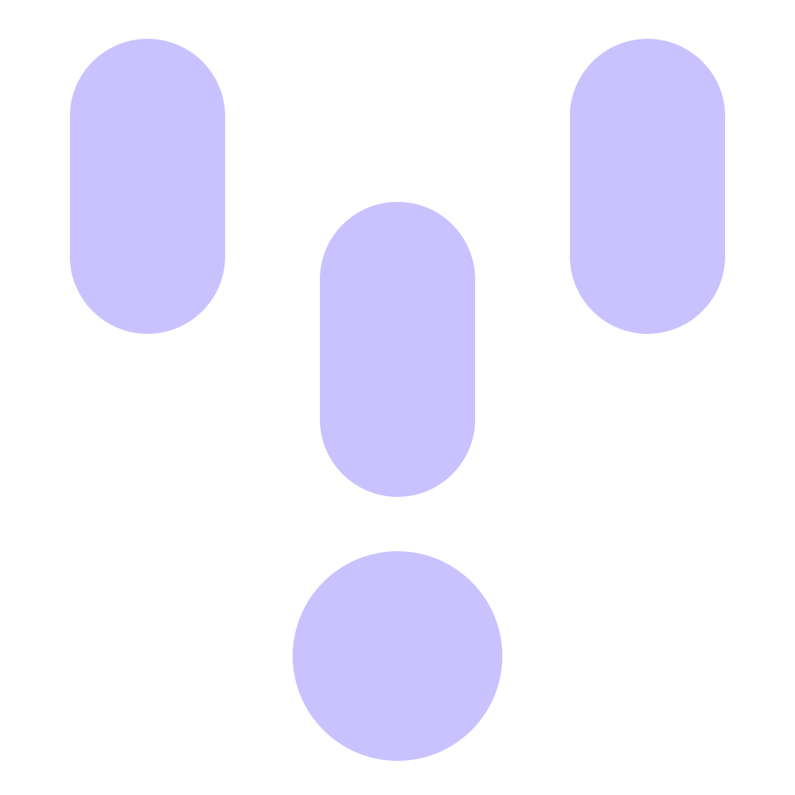

v2c 圖示候選
候選 A：聲波收斂成 V，尾端接文字游標（語音變成文字）
托盤：
托盤：
候選 B（已選定）：對話氣泡內的麥克風，黃色 V 形托架（說話變成對話）
托盤（雙版本）：深色字形用於淺色工作列，淺色字形用於深色工作列。
淺色版 candidate-b-tray-light：深色版 candidate-b-tray-dark：
淺色版 candidate-b-tray-light：深色版 candidate-b-tray-dark：
候選 C：V 形聲波長條流向底部的 AI 代理節點與衛星點（語音交給 AI 代理）
托盤（雙版本）：深色字形用於淺色工作列，淺色字形用於深色工作列；每列依序顯示 16、24、32 px。
淺色版 candidate-c-tray-light：
深色版 candidate-c-tray-dark：

淺色版 candidate-c-tray-light：
深色版 candidate-c-tray-dark：